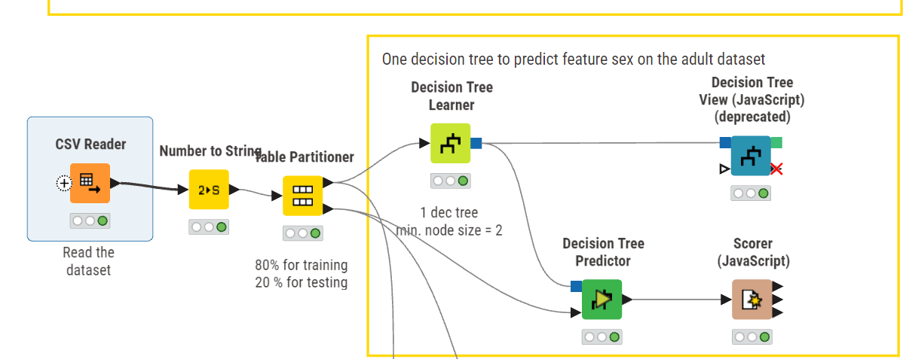
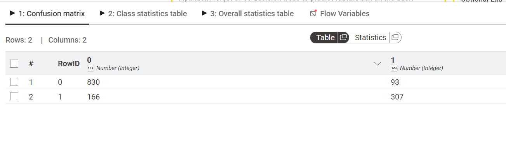
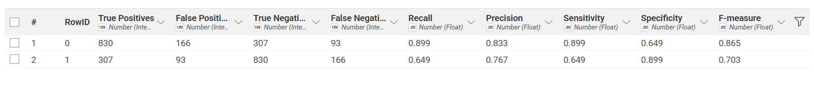
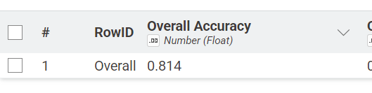
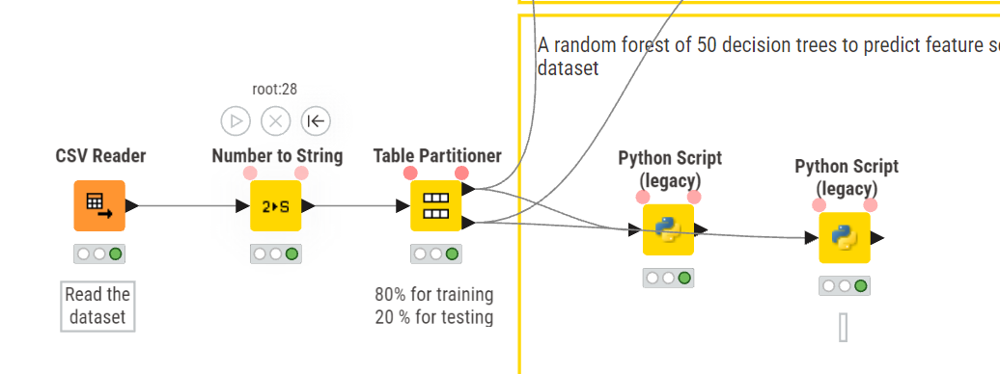

Analisis data menggunakan random forest#
Deskripsi tugas#
Pada tugas kali ini, dengan dataset yang kita punya perintah tugas melakukan perbandingan antara Decision Tree dengan Random Forest, dimana random forest adalah decision tree itu sendiri namun dengan jumlah yang lebih banyak
Penjelasan Random Forest#
Random forest adalah algoritma dalam machine learning yang digunakan untuk menyelesaikan masalah klasifikasi maupun regresi. Metode ini termasuk dalam ensemble learning, yaitu pendekatan yang menggabungkan banyak model untuk menghasilkan prediksi yang lebih baik dan lebih akurat
Random Forest terdiri dari banyak decision tree. Sekumpulan pohon ini disebut “forest”, yang dibentuk melalui proses yang disebut bagging (bootstrap aggregating). Bagging adalah metode yang melatih setiap model menggunakan sampel data yang diambil secara acak dari dataset asli, sehingga setiap pohon memiliki variasi data yang berbeda. Teknik ini membantu meningkatkan akurasi model secara keseluruhan.
Hasil akhir dari Random Forest ditentukan berdasarkan gabungan prediksi dari semua decision tree. Untuk masalah klasifikasi, hasilnya diperoleh melalui voting mayoritas dari semua pohon. Sedangkan untuk regresi, hasil akhir dihitung dari rata-rata seluruh output pohon.
Dataset#
Pada tugas kali ini dataset yang digunakan adalah dataset karyawan dalam sebuah perusahaan, dimana data ini menentukan seorang karyawan keluar atau tidak dalam perusahaan tersebut berdasarkan beberapa fitur yaitu:
Education
Joining year (tahun bergabung)
City (kota)
Payment Tier (Tingkatan gaji)
Age
Gender
Ever benched
Experience in Current Domain (Pengalaman orang tersebut berdasarkan tahun)
Lalu kolom
LeaveOrNot Adalah kolom target/class nya yang akan dilakukan prediksi menggunakan Random forest ini.
Berikut link dataset yang digunakan: Dataset
Workflow Knime#
Workflow Decision tree#

Penjelasan Node#
Csv Reader: Digunakan untuk membaca file CSV atau dataset yang digunakan
Number to string: Dalam kolom target/class, berisikan nilai integer, kita perlu convert tipe data nya menjadi string salah satu alasan nya agar data tidak memiliki tingkatan
Table Partitioner: Digunakan untuk men-split data antara testing dan training, normalnya perbandingan nya adalah 70:30 atau 80:20
Decision Tree Learner: Node ini murni digunakan untuk menjalankan algoritma decision tree nya, di dalamnya kita bisa setting method decision tree yang digunakan
Decision tree predictor: Hasil dari node tree learner akan dikirim melalui tree predictor, lalu node ini juga menyimpan nilai testing data yang akan dilakukan berdasarkan model decision tree learner diatasnya.
Decision tree view: node ini hanya akan menghasilkan gambar tree yang sudah dibuat oleh tree learner sebelumnya
Scorer: Ini adalah hasil node yang menghitung confussion matrix, accuracy, recall dsb
Berikut adalah hasil dari decision tree diatas:



Workflow Random Forest#

Penjelasan Node#
Csv Reader: Digunakan untuk membaca file CSV atau dataset yang digunakan
Number to string: Dalam kolom target/class, berisikan nilai integer, kita perlu convert tipe data nya menjadi string salah satu alasan nya agar data tidak memiliki tingkatan
Table Partitioner: Digunakan untuk men-split data antara testing dan training, normalnya perbandingan nya adalah 70:30 atau 80:20
Python Script (Legacy): Terdapat 2 python script disini, dimana yang pertama digunakan untuk melakukan training dan save model, yang kedua untuk testing dan load model nya. Sehingga pada node yang kedua kita hanya perlu ambil data testing dari table partitioner dan load data train melalui file pkl yang sudah dibuat dengan library joblib
Python script Training:#
import pandas as pd
from sklearn.ensemble import RandomForestClassifier
import category_encoders as ce
import joblib
df = input_table_1.copy()
x_train = df.drop('LeaveOrNot', axis=1)
y_train = df['LeaveOrNot']
#encode
cat_cols = [
'Education',
'City',
'Gender',
'EverBenched'
]
encoder = ce.OneHotEncoder(cols=cat_cols)
x_train = encoder.fit_transform(x_train)
# Training model
model = RandomForestClassifier(
criterion='entropy',
n_estimators=300,
max_depth=10,
min_samples_leaf=2,
min_samples_split=2,
class_weight='balanced',
random_state=42
)
model.fit(x_train, y_train)
joblib.dump(model, 'rfEmployee.pkl')
joblib.dump(encoder, 'encoder.pkl')
train_acc = model.score(x_train, y_train)
output_table_1 = df
Penjelasan part code:
Import library dan ambil data train
import pandas as pd
from sklearn.ensemble import RandomForestClassifier
import category_encoders as ce
import joblib
df = input_table_1.copy()
x_train = df.drop('LeaveOrNot', axis=1)
y_train = df['LeaveOrNot']
Encoding data
#encode
cat_cols = [
'Education',
'City',
'Gender',
'EverBenched'
]
encoder = ce.OneHotEncoder(cols=cat_cols)
x_train = encoder.fit_transform(x_train)
Training model
# Training model
model = RandomForestClassifier(
criterion='entropy',
n_estimators=300,
max_depth=10,
min_samples_leaf=2,
min_samples_split=2,
class_weight='balanced',
random_state=42
)
model.fit(x_train, y_train)
Save model dan versin encode nya
joblib.dump(model, 'rfEmployee.pkl')
joblib.dump(encoder, 'encoder.pkl')
Python script Testing:#
from sklearn.metrics import accuracy_score
from sklearn.metrics import confusion_matrix
from sklearn.metrics import classification_report
import pandas as pd
import joblib
df_test = input_table_1.copy()
x_test = df_test.drop('LeaveOrNot', axis=1)
y_test = df_test['LeaveOrNot']
# load
model = joblib.load('rfEmployee.pkl')
encoder = joblib.load('encoder.pkl')
# encode pakai encoder lama
x_test = encoder.transform(x_test)
#testing
y_pred = model.predict(x_test)
acc = accuracy_score(y_test, y_pred)
print(classification_report(y_test, y_pred))
print(f"{acc:.3f}")
# output
report = classification_report(y_test, y_pred, output_dict=True)
df_metrics = pd.DataFrame(report).transpose().reset_index()
df_metrics.columns = ['Class'] + list(df_metrics.columns[1:])
output_table_1 = df_metrics
Penjelasan part code:
Import dan ambil data dari table partioner
from sklearn.metrics import accuracy_score
from sklearn.metrics import confusion_matrix
from sklearn.metrics import classification_report
import pandas as pd
import joblib
df_test = input_table_1.copy()
x_test = df_test.drop('LeaveOrNot', axis=1)
y_test = df_test['LeaveOrNot']
Load data pkl
model = joblib.load('rfEmployee.pkl')
encoder = joblib.load('encoder.pkl')
Encode data testing (Gunakan encoder data training agar hasil sama)
# encode pakai encoder lama
x_test = encoder.transform(x_test)
Testing model
#testing
y_pred = model.predict(x_test)
Output confussion matrix, classification hingga accuracy
print(classification_report(y_test, y_pred))
print(f"{acc:.3f}")
# output
report = classification_report(y_test, y_pred, output_dict=True)
df_metrics = pd.DataFrame(report).transpose().reset_index()
df_metrics.columns = ['Class'] + list(df_metrics.columns[1:])
output_table_1 = df_metrics
Hasil akhir Prediksi data menggunakan random forest:

Perbandingan hasil Random forest dan decision tree#
Metric |
Random Forest |
Decision Tree |
|---|---|---|
Accuracy |
0.856 |
0.814 |
Precision Class 0 |
0.871 |
0.833 |
Recall Class 0 |
0.918 |
0.899 |
F1-Score Class 0 |
0.894 |
0.865 |
Precision Class 1 |
0.821 |
0.767 |
Recall Class 1 |
0.736 |
0.649 |
F1-Score Class 1 |
0.776 |
0.703 |
Berdasarkan hasil evaluasi pada tabel, model Random Forest menunjukkan performa yang lebih baik dibandingkan Decision Tree pada seluruh metrik pengujian. Nilai accuracy Random Forest mencapai 0.856, sedangkan Decision Tree memperoleh nilai 0.814. Hal ini menunjukkan bahwa Random Forest memiliki tingkat ketepatan prediksi yang lebih tinggi dalam melakukan klasifikasi data.
Pada pengujian untuk Class 0, Random Forest memperoleh precision sebesar 0.871, recall sebesar 0.918, dan F1-score sebesar 0.894. Nilai tersebut lebih tinggi dibandingkan Decision Tree yang memperoleh precision 0.833, recall 0.899, dan F1-score 0.865. Hasil ini menunjukkan bahwa Random Forest lebih baik dalam mengenali dan mengklasifikasikan data pada Class 0.
Maka dengan ini, Random forest memiliki hasil yang jauh lebih baik dan stabil dibandingkan decision tree itu sendiri